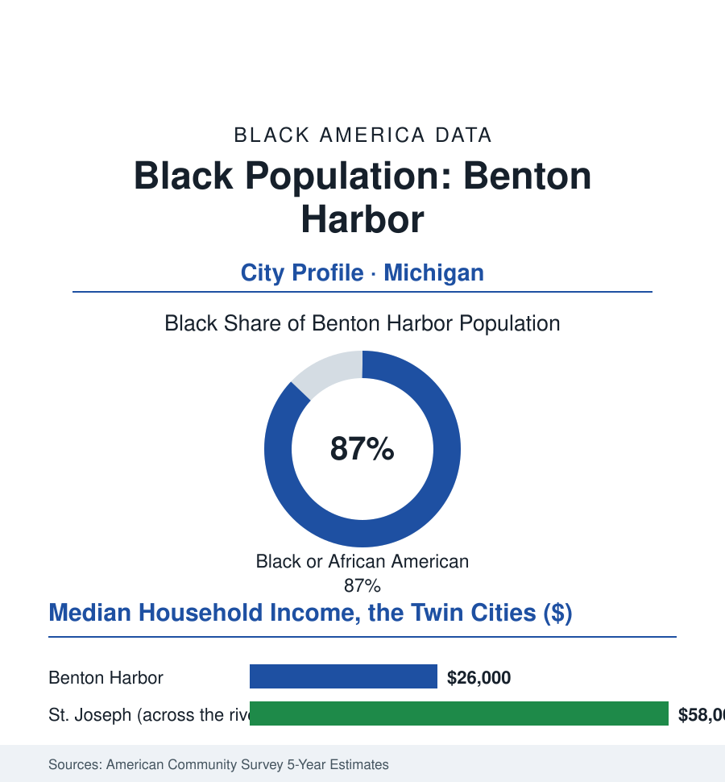

Black Cities
Black Benton Harbor: 8,000 People Across the River From Another America
Benton Harbor and St. Joseph share a river, a bridge, and a metro area — and almost nothing else in the data. A paired-city portrait of America's closest stark divide.

Benton Harbor's Black community numbers roughly 8,000 people — about 87% of the small city's 9,000 residents — on the St. Joseph River's east bank in southwest Michigan, ninety miles from Chicago across the lake. A five-minute bridge ride away stands St. Joseph: same metro, same river, same corporate anchor — a city that is overwhelmingly white, with a median household income more than double Benton Harbor's. No paired portrait in this atlas is closer, or starker. This article reads both sides of the bridge.
How the Twin Cities Split
The divergence was manufactured across the twentieth century by the region's standard instruments, applied at point-blank range: the resort-and-industry economy's hiring (the house-of-David era attractions, the canneries and the Whirlpool plants' growth) drawing Black migrants from the South in the Great Migration's Michigan line — and the housing market sorting them onto one bank of the river by covenant, custom, and lending map, while the white workforce's suburbs consolidated on the other. The industrial file's contractions then landed asymmetrically, as they were built to: the plant closings and the retail strip's flight following the income across the bridge, Benton Harbor's population falling from its seventeen-thousand peak, its downtown emptying into the vacancy data's familiar rows, its fiscal base collapsing toward the state's emergency-management thresholds. The paired statistics became a genre of their own in the policy literature — the two cities cited in report after report as the natural experiment of American segregation: same labor market, same climate, same river, with life expectancy, school outcomes, infant health, and wealth diverging at the bridge line as if a national border ran across it — the epidemiologists' maps showing the gap in years of life measurable in the minutes of the crossing. The corporate anchor's own evolution sits in the record with the era's irony intact: Whirlpool, headquartered on the Benton Harbor side, its executives and its philanthropy increasingly the city's lifeline — the harbor development, the golf-course redevelopment of the lakefront industrial land, the foundation's grants — a single company's conscience negotiating with a century of the region's arithmetic.
The Present Ledger
The current data hold the city's two stories in their usual tension: the distress rows (median household income in the mid-twenty-thousands in the survey estimates, poverty around two-fifths of residents, the schools' state-partnership status, the water system's infrastructure crisis of the recent years — the lead-service-line replacement program that made the city a national infrastructure story, completed under state order and federal money at a pace that proved the problem had always been the budget, not the engineering) against the asset rows the booster literature recites (the Lake Michigan shoreline and the harbor, the arts district's galleries in the old storefronts, the interstate and the Chicago second-home market pressing at the township line, the young Black professional return-migration the local record claims in small but symbolically loaded numbers). The governance thread runs through the state's own reversal: Benton Harbor was among the first cities placed under Michigan's emergency-manager law — its elected government suspended — and among the cases that made that law a national argument about race and democracy, the restoration of its elected officials since entered in the record beside the school-board file's wider count of Black self-government dissolved and restored. The city's own framing of its future, in its plans and its pastors' and mayor's public record, declines the twin-city comparison as a life sentence: the bridge, in their telling, is infrastructure, not destiny — and the development fights of the current decade, over the lakefront's next use and the harbor's, are the argument being conducted in zoning, which is where such arguments are finally settled.
Reading Benton Harbor's Numbers
Eighty-seven percent of 9,000 people, five minutes from affluence: Benton Harbor is the cities file's control experiment, the place that disproves every geographic and climatic theory of the atlas's gaps by standing in the same weather as their opposite. Nothing about the river explains the two ledgers. Everything about the century does — and the ledgers, the census reminds the bridge-crosser every five years, are still being kept on both banks. The residents, on both banks, could have told the statisticians so.
More in Black Cities
Black Atlanta: Population, Distribution, and Growth of a Black Metropolis
Metro Atlanta holds more than two million Black residents — roughly one in three, second only to New York. The suburban distribution, migration history, and composition of Black Atlanta in the census data.
Black New York: The Largest Black Population in America
The New York metropolitan area holds about 3.4 million Black residents — more than any metro in the nation — and the city itself about two million. The census profile.
Black Washington: The District and the Metro
The Washington metro holds about 1.6 million Black residents, and the District itself — long a majority-Black city — now records a Black share near 41 percent. The census profile.
Source: U.S. Census Bureau, 2020 Census and American Community Survey 5-year estimates; City of Benton Harbor; Michigan Department of Treasury records; Whirlpool Corporation community data.